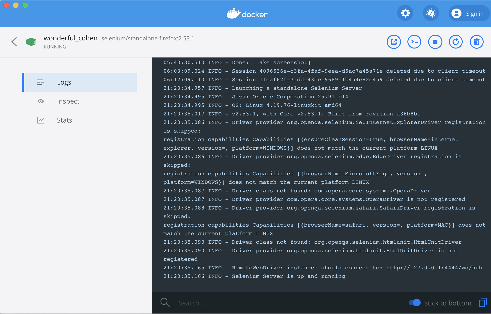

第 3 章 网络数据采集
这一章我们将介绍如何通过R采集网络数据。互联网每一秒都在产生数据，网络已经成为经济学研究以及很多数据公司的重要数据来源，因此学习网络数据采集就非常有必要。本章的第一节我们将介绍网络上数据传输的主要格式，这是采集网络数据的基础；第二节将介绍超文本链接语言的基本语法，这对于采集网页基础；第三节中，我们将介绍一种针对html的特定查询语言-Xpath，它将帮助我们从HTML中快速找到我们需要的信息；第四节我们将补充介绍CSS（层叠样式表）的基础知识，一方面CSS可以提到Xpath帮助我们解析网页信息，另一方面，CSS的基础知识将在文学式编程中起到四两拨千斤的作用；第五节我们将介绍HTTP通信的基本方式；第六节中我们介绍一个静态网页爬虫的案例；第七节中我们将介绍如何使用Selenuim框架完成动态网页爬虫；第八节（如果能完成的话）我们将使用HTTP基本通信方法实现动态网页爬虫
3.1 网络数据格式
正如我们在最前面介绍的，数据不仅仅是数据工程分析的对象，更是数据工程不同部分之间衔接的接口，数据读写是数据分析的基础。而网络通信说到底也是数据的交流过程。
按照数据的使用方式，我们可以将数据进一部分为通用数据与非通用数据，前者不限于特定的编程工具，在程序世界中扮演者“通用货币”的角色，是可以跨语言跨工具使用的标准数据，例如txt,csv,xml,json, hdf5等；后者则是特定语言使用的数据，在一定程度上也可以跨语言使用，但是跨语言使用时经常伴随有信息的错误与损失，常见的非通用数据有dta(Stata),xls(MS Excel),spv(SPSS), RData(R)等。RStudio在使用非通用数据时，可以从Import Dataset下来菜单中选择相应的选项。在网络通信中，通用数据是主角。
3.1.1 CSV
CSV(Comma-Separated Values)逗号分隔值文本数据，以纯文本形式存储表格数据（数字和文本）。纯文本意味着该文件是一个字符序列，不含必须像二进制数字那样被解读的数据。CSV文件由任意数目的记录组成，记录间以某种换行符分隔；每条记录由字段组成，字段间的分隔符是其它字符或字符串，最常见的是逗号或制表符(tsv)。 CSV的优势在于可以用MS Excel直接编辑，读写简便，跨平台使用方便，其最大劣势为以表结构为基础，灵活性较差，尤其是数据结构比较复杂时，CSV的效率会变得很差。
3.1.2 XML
XML(Extensible Markup Language),-可扩展标记语言-是专门设计用来传输数据的标记语言。R中我们使用XML包读入XML数据，
## <?xml version="1.0" encoding="UTF-8"?>
## <publications dataset="scad-zbmath-01-limited-access">
## <publication id="zbmath:0790.73063">
## <title>Torsional vibrations of nonhomogeneous magnetostrictive elastic circular cylinder</title>
## <venue>Int. J. Math. Math. Sci. 17, No.1, 181-185 (1994).</venue>
## <year>1994</year>
## <classification>74F15 74H45</classification>
## <keywords>circumferential magnetic field; axial current; longitudinal magnetic field; frequency equation; displacement; stress</keywords>
## <abstract>This paper is concerned with the torsional vibrations of a nonhomogeneous magnetostrictive elastic cylinder. The cylinder is subjected to the action of a circumferential magnetic field produced by an axial current of constant density, and the deformation of a magnetostrictive cylinder is produced by a constant longitudinal magnetic field. The frequency equation is determined, and the displacement and stress components are numerically calculated with graphical presentations.</abstract>
## <authors>
## <author name="Debnath, Lokenath" shortname="Debnath, L." id="debnath.lokenath"/>
## </authors>
## </publication>
## <publication id="zbmath:0805.73022">
## <title>Torsional wave propagation in an orthotropic magneto-elastic hollow circular cylinder</title>
## <venue>Appl. Math. Comput. 63, No.2-3, 281-293 (1994).</venue>
## <year>1994</year>
## <classification>74J10 74F15</classification>
## <keywords>extrema; characteristic numbers; phase velocities; first five modes</keywords>
## <authors>
## <author name="Abd-alla, Abo-el-nour N." shortname="Abd-alla, A." id="abd-alla.abo-el-nour-n"/>
## </authors>
## </publication>
## </publications>
## 标准的XML可以分为标记（Markup）与内容（content）两类。标记通常以<开头，以/>结尾，在上面的例子中，publications以及publication都是标记。
标记也称为标签Tag，是规定XML文件结构的部分,是数据的结构。
内容又称为元素Element，是标签“标记”的部分,是数据的值。上面的例子中Torsional vibrations of nonhomogeneous magnetostrictive elastic circular cylinder便是标记title的值。
每一个标签可以拥有若干属性Attribute,属性以name=value的形式出现。每个元素中,一个属性最多出现一次,一个属性只能有一个值。例如第一个publication标记拥有一个属性id,取值为zbmath:0790.73063。
从数据结构上来说XML是树形结构，其优点在于跨平台表现优异，可以传输传输结构复杂的数据。因此，经常被用作通用数据标准。但是细心的读者很容易发现XML的劣势，大部分标签名都重复出现了两次。另外，仅仅从数据传输而不是数据可视化的角度来说，属性本质上也可以用标签+内容的方式来表达，而不需要单独设置。这都使得XML在传输数据方面，显得比较“笨重”，效率还有提升的空间。
3.1.3 JSON
JASON(JavaScript Object Notation,JavaScript)-Java对象表示法-是由道格拉斯·克罗克福特构想和设计、轻量级的数据交换语言，该语言以易于让人阅读的文字为基础，用来传输由属性值或者序列性的值组成的数据对象。尽管JSON起初是为JavaScript设计的，但如今早已发展成为独立于特定语言之外的通用数据格式。
R中可以使用jsonlite读写JSON文件,读入数据成为一个list

JSON由对象object与数组组成。对象（object）是一个对象包含一系列非排序的名称／值对(pair)，一个对象以{开始，并以}结束。每个名称／值对之间使用:分割。上面的例子中"version":3就是一个对象，其名称是version，value是3。
数组(array)：一个数组是一个值(value)的集合，一个数组以[开始，并以]结束。数组成员之间使用,分割。上面例子中"ordinals"对应的值便是一个数组。
JSON与XML最大的不同在于XML是一个完整的标记语言，而JSON不是。XML利用标记语言的特性提供了绝佳的延展性（如XPath），在数据存储，扩展及高级检索方面具备对JSON的优势，而JSON则由于比XML更加小巧，以及浏览器的内建快速解析支持，使得其更适用于网络数据传输领域。
3.2 HTML
由于我们的任务是从网页上采集数据，所以非常有必要学习网页设计的基本知识。网页设计有三大件：HTML、CSS 和 Javascript，相当于80年代的冰箱、彩电、洗衣机三大件。HTML是一种标记语言，用来设计网页的内容以及内容的层次结构；CSS规定网页展示的方式，例如颜色、字体和布局；Javascript是一种脚本语言，用来实现动态内容。 MDN (Mozilla Developer Network), w3schools.com提供了丰富且详细的教程与案例。不过要友情提示一下，W3school的教程简洁明了，还有可以运行的案例，经常一学起来就会停不下来，挺耽误正事儿的，一不小心容易把自己学成一个前端工程师。我们的目的并不是成为一名优秀的前端工程师，因此本书中并不会事无巨细地介绍相关语言，仅仅是为大家后续学习提供一个接口。
HTML(Hyper Text Markup Language)，超文本标记语言不是一种编程语言，而是一种标记语言，使用一整套标签规则来描述网页的信息。这里的信息既包括网页需要承载的内容，也包括如何展示这些内容的设计。实际上，我们打开浏览器之后看到的内容的源码都是HTML。
3.2.1 HTML的基本语法
标签与内容组合起来构成了HTML的组成元素。标签(tag)是有尖括号括起来的关键词，例如，<tb>。除了极少数情况(例如表示换行的<br>)外，标签通常是成对出现的，一个开放标签与一个闭合标签。例如<div>与</div>，闭合标签多了一个/。
HTML标签可以拥有属性，属性出现在开放标签内，以name=“value”的形式出现。注意这里的""不可以省略。另外属性值对于大小写不敏感。
加入google的例子作为说明
3.2.2 常见HTML标签
锚标签<a></a>允许HTML网页可以链接到其他文档，从而把HTML从单纯的标记语言编程超文本标记语言。
第一种用法是使用网页地址作为绝对路径的锚标签：
<a href = "https://www.w3school.com.cn/html/index.asp">点击此处打开W3school </a>第二种用法是在文档中设定锚定点，并在后续文档中使用，实现文件内链接：
设置一个引用点并使用
<a id ="top">我是引用点</a>
使用引用点
<a href = "#top">跳到引用点</a>设置一个引用点并使用
使用引用点
上述两种标签可以联合使用。
元数据标签<meta>是一个无需闭合的标签，定义了HTML网页的元信息，例如作者、编码方式等。
<meta name = 'keywords" content = "Data Engineering">外部引用标签<ref></ref>用于引入信息与外部文件，在head元素内部使用，是空元素，所有信息都在属性内提供
指定使用的样式表
<link rel = "stylesheet" href="htmlresources/awesomestyle.csss" type = "text/csss" />使用指定网站的相关图标
<link rel = "shortcut icon" href = "https://www.r-project.org/logo/Rlogo.svg" type = "image/x-icon" />强调标签用于强调特定文本，常见的强调标签有：
<b> 这里是粗体 </b>
<i> 这里是斜体 </i>
<strong> 这里是加重 </strong>
<s> 这里是删除 </s> 这里是粗体
这里是斜体
这里是加重
这里是删除
段落标签<p> </p> 用于标记其内部内容为一个段落，段落前后均有换行
<p>这里是一个段落</p>这里是一个段落
列举标签包括有序列表、无序列表以及自定义列表。有序列表由<ol> 与<li>配合使用，例如：
<ol>
<li>第一项</li>
<li>第二项</li>
</ol>
<dl> 与(<dt>,<dd>) 描述列表会显示为：
- 第一项
- 第二项
无序列表由<ul> 与<li>配合使用，例如：
<ol>
<li>这是一个无序列表</li>
<li>这是另一个无序列表</li>
</ol>会显示为：
- 这是一个无序列表
- 这是另一个无序列表
自定义列表由<dl>与<dt>、<dd> 配合使用，<dt>后是列表，<dd>是对列表的描述，例如：
<dl>
<dt>计算机</dt>
<dd>用来计算的仪器 ... ...</dd>
<dt>显示器</dt>
<dd>以视觉方式显示信息的装置 ... ...</dd>
</dl>- 计算机
- 用来计算的仪器 … …
- 显示器
- 以视觉方式显示信息的装置 … …
布局标签由<div>定义，每一个布局的显示方式可以用层叠样式表CSS配套使用，从而实现内容和布局分开，再次实现正交分解。我们下节将介绍CSS。
表格由<table>标签来定义，同时使用<tr>来标注行，<td>来标注列。例如：
<table border="1">
<tr>
<td>row 1, cell 1</td>
<td>row 1, cell 2</td>
</tr>
<tr>
<td>row 2, cell 1</td>
<td>row 2, cell 2</td>
</tr>
</table>| row 1, cell 1 | row 1, cell 2 |
| row 2, cell 1 | row 2, cell 2 |
外部脚本标签<script>用于定义客户端脚本，在HTML中引入javascript脚本。
表单<form>是一类特殊的特殊的标签，其作用在于收集用户的输入，根据不同的收集方式，表单可以分为不同的类型。例如，<input type="text"> 定义用于文本输入的单行输入字段。更详细的表单使用方法可以参考W3school。
<form>
First name:<br>
<input type="text" name="firstname">
<br>
Last name:<br>
<input type="text" name="lastname">
</form> 会显示为：
3.2.3 DOM树形数据结构
网页实际上是标签嵌套标签构成的，从数据结构上来看，标准的HTML都是一个树状结构，这与XML 和JSON是一致的。在R中，可以使用XML包的htmlParse函数将一个储存在向量中的字符串状态的html数据解析成为树状结构。
在采集网络数据之前，我们往往需要先在浏览器中熟悉一下网页的HTML源码。Chrome 浏览器的开发者工具与Firefox的Web开发者工具中查看网页的源代码。
3.3 CSS
CSS(Cascading Style Sheets)层叠样式表用于规定网页的布局(例如将网页分成几个板块)与风格(例如颜色、字体大小等)，从而实现网页设计中的内容与样式的正交分割，从而极大地提升了网页设计的工作效率。熟悉CSS不仅可以在网络数据爬取中使用CSS选择器来解析网页信息，也可以让你对文学式编程中的排版游刃有余。CSS既可以位于HTML的<head>标签内部，也可以储存在一个外部.css文件中，并通过<head>标签内<link rel="stylesheet" href="styles.css">来调用，其中style.css是CSS文件名称，需要与.html文件放在同一个路径中。
3.3.1 CSS的基本语法
CSS规则由两部分构成：选择器与声明，selector {property: value},其中声明包括“属性:值”对的形式出现，多个声明用分号分割。例如，
<html>
<head>
<meta charset="utf-8">
<title>My CSS experiment</title>
<style>
h5 {
color: blue;
background-color: yellow;
border: 1px solid black;
}
</style>
</head>
<body>
<h5>Hello World!</h5>
</body>
</html>Hello World!
当然我们可以通过内联样式来实现同样的功能，但是我们并不推荐这种写法，因为这种写法没有充分发挥正交性，难以维护。
<html>
<head>
<meta charset="utf-8">
<title>My CSS experiment</title>
</head>
<body>
<h1 style="color: blue;background-color: yellow;border: 1px solid black;">Hello World!</h1>
</body>
</html>3.3.2 id选择器
id选择器可以为有特定id的HTML元素指定特定的样式，id选择器以#来定义。例如下面的代码中定义了两个id选择器，对应字体分别为红色和绿色，并在后续的html中使用该样式：
<html>
<head>
<meta charset="utf-8">
<title>My CSS experiment</title>
<style>
#red {color:red;}
#green {color:green;}
</style>
</head>
<body>
<p id="red">这个段落是红色。</p>
<p id="green">这个段落是绿色。</p>
</body>
</html>这个段落是红色。
这个段落是绿色。
3.3.3 类选择器
类选择器以一个点号定义，在html中通过class=""来使用。在下面的例子中，我们定义了一个居中样式的类选择器，
<html>
<head>
<meta charset="utf-8">
<title>My CSS experiment</title>
<style>
.center {text-align: center}
</style>
</head>
<body>
<p class="center">这个段落是居中的。</p>
</body>
</html>.center {text-align: center}定义了居中的样式，并在后续段落中使用，其显示结果为：
这个段落是居中的。
当然CSS的内容远远要比我们此处介绍的丰富，网页上的所有样式都是通过CSS设定的，推荐大家在MDN与W3school深入学习。特别需要指出的是，CSS还可以辅助我们从DOM中提取相关信息，虽然本书的技术重点是通过XPath来解析网页，但是我们也会介绍CSS的方法。
3.4 JavaScript
JavaScript 是一种针对网页的脚本编程语言，可以在网页上实现复杂的功能，网页可以从静态网页编程包括交互式、动画以及滚动播放等功能的动态网页。JavaScript是一个典型的面向对象的编程语言，对于已经掌握本书前面基础知识的读者，自学JS并不是一个很大的挑战。还有个事儿得解释一下，JavaScript并不是Java的衍生品。可以说JavaScript和Java的关系就相当于周杰伦和周杰的关系。
本书的篇幅不允许我们对JavaScript做全面和深入的介绍，这也不是本书的任务。同时，市面上已经有足够多优秀的JavaScript教材，而且W3School和MDN也为我们提供了足够详细的教程。再次提醒读者，在学习JS时候，一定要利用好开发者工具。
本节中，我们参考MDN教程1改变了一个案例，来给大家展示JavaScript的基本语法与功能。
3.4.1 JavaScript案例
通过这段代码，我们可以玩一个名字是黑魔法的猜字游戏，你最多有十次机会猜中一个我们附魔的词汇（如果你是一个聚会高手，或者看过《向往的生活》的话，这个题目肯定难不住你）。在看讲解之前，大家可以先自己玩几盘这个小游戏，看看能否解锁这个游戏的逻辑。 其编译结果为：
黑魔法游戏
我刚才附魔了一个词汇,请你发挥你的魔法天赋，看看能否猜中它！你将有10次机会，考验你魔力的时刻到了！
该案例的源代码如下：
<!DOCTYPE html>
<html >
<head>
<meta content="charset=UTF-8">
<title>黑魔法游戏</title>
</head>
<body>
<h1>黑魔法游戏</h1>
<p>我刚才附魔了一个词汇,请你发挥你的魔法天赋，看看能否猜中它！你将有10次机会，考验你魔力的时刻到了！</p>
// 定义表单
<div class="form">
<label for="guessField">请猜词：</label><input type="text" id="guessField" class="guessField">
<input type="submit" value="我猜" class="guessSubmit">
</div>
//可变输出内容
<div class="resultParas">
<p class="guesses"></p>
<p class="lastResult"></p>
<p class="guessCount"></p>
</div>
//JavaScript代码块
<script>
//定义四个常量和三个变量
const guesses = document.querySelector('.guesses'); //document.querySelector是一个HTML DOM方法,通过CSS选择器查找HTML中guesses类元素,后面三行功能类似
const lastResult = document.querySelector('.lastResult');
const guessSubmit = document.querySelector('.guessSubmit');
const guessField = document.querySelector('.guessField');
let guessCount = 1;
let signal = 0 ;
let resetButton;
function checkGuess() {
let userGuess = guessField.value; //声明了一个名为 userGuess 的变量，并将其设置为在文本字段中输入的值
//下面的代码中是一个条件语句,当guessCount为1时，让 guesses 段落的文本内容等于“上次猜的数：”
if (guessCount === 1) {
guesses.textContent = '上次猜的词：';
}
guesses.textContent += userGuess + " ";//将userGuess的值附加到 guesses 段落的末尾，并加上一个空格
//下面是一个三重条件语句
if (signal === 1) {
lastResult.textContent = '你太聪明了！已经掌握了黑魔法！';//当判断信号为1时，输出文本“你太聪明了！已经掌握了黑魔法！”
lastResult.style.backgroundColor = 'green';//将文本背景设置为绿色
setGameOver();\\调用setGameOver函数
} else if (guessCount === 10) {
lastResult.textContent = '!!!很遗憾，你没有得到黑魔法的精髓!!!';//当判断信号不为1且猜词次数已经满10次时，输出文本“!!!很遗憾，你没有得到黑魔法的精髓!!!”
setGameOver();\\调用setGameOver函数
} else {
lastResult.textContent = '你的魔力还不够，请用点子智慧！';//当判断信号不为1且猜词次数不满10次时，输出文本“你的魔力还不够，请用点子智慧！”
lastResult.style.backgroundColor = 'red';//将文本背景设置为红色
if (userGuess.match("黑") != null) {
signal = 1;//同时，当玩家猜的词汇包含“黑”字的时候，将判断信号设为1，这样下次，无论玩家输入什么词汇，都会赢得比赛，这正是黑魔法游戏的精髓
}
}
guessCount++;//guessCount累加1
guessField.value = '';//清空guessField值
guessField.focus();//重新将光标聚焦于guessField
}
guessSubmit.addEventListener('click', checkGuess);//此处为一个事件监听器。其作用是，当点击Submit按钮时，执行checkGuess函数
//定义游戏结束的函数
function setGameOver() {
guessField.disabled = true;
guessSubmit.disabled = true;//这两行通过将 disable 属性设置为 true 来禁用表单文本输入和按钮
resetButton = document.createElement('button');
resetButton.textContent = '我不死心';
document.body.appendChild(resetButton);
resetButton.addEventListener('click', resetGame);//创建一个新的<button> 元素，设置它的文本为“开始新游戏”，并把它添加到当前 HTML 的底部
}
function resetGame() {
guessCount = 1;//重设猜词次数为1
signal = 0;//重设判断信号为0
const resetParas = document.querySelectorAll('.resultParas p');//新建一个常数并赋值为包含 <div class="resultParas"> 内所有段落的变量
for(let i = 0 ; i < resetParas.length ; i++) {
resetParas[i].textContent = '';//通过循环迭代，删除每个段落的文本内容
}
resetButton.parentNode.removeChild(resetButton);//从html页面删除resetbotton
guessField.disabled = false;
guessSubmit.disabled = false;//这两行通过将 disable 属性设置为 false 来激活表单文本输入和按钮
guessField.value = '';//清空guessField值
guessField.focus();//重新将光标聚焦于guessField
lastResult.style.backgroundColor = 'white';//设置lastResult文本背景为白色
}
</script>
</body>
</html>3.4.2 JavaScript的基本语法
实际上，这段代码中覆盖了JavaScript的常见功能，下面来简述其原理。首先，JavaScript位于<script>标签中间，置于HTML的<body>标签内的最底部。另外，JavaScript还可以置于外部.js文件中，在HTML中通过<script src="sample.js"></script>进行调用。
其次，上面代码中，通过let和const创建变量与常量，并通过=对变量进行赋值。在下面的HTML代码中，将两个常量指向网页的段落中的元素。
<p class="guesses"></p>
<p class="lastResult"></p>同时，使用下列代码，通过HTML表达来获取常量的值。
<label for="guessField">请猜词：</label>
<input type="text" id="guessField" class="guessField">
<input type="submit" value="我猜" class="guessSubmit">let resetButton;设置了一个重置按钮，但是这个功能在我们的书稿中无法正常显示，感兴趣的读者可以将本段代码存成html文件后用浏览器打开，可以看到全部功能。
第三，document.querySelector与document.createElement代表了HTML DOM方法，用于能够(在HTML元素上)执行的动作，可以通过 JavaScript进行访问与操作，其中document.querySelector是一个CSS类选择器，允许JS关联页面中的对应CSS类元素；document.createElement用于创建一个元素。
第四，我们定义了三个函数，第一个函数checkGuess()用于检查读者输入的词汇是否正确，你并根据判断结果与猜词的次数来决定反馈给读者的提示信息；第二个函数setGameOver(x)是一个带有参数的函数，用来决定游戏结束条件与结束时的反馈；第三个函数resetGame()用于重置游戏。JavaScript函数的基本结构为：
function checkGuess() {
}第五，条件语句。JavaScript以下列结构来构造条件语句：
if () {
}else if(){
}else{
}第六，事件是浏览器中发生的动作，例如点击按钮、加载页面、播放视频等，我们需要使用事件来调用JavaScript代码。侦听事件发生的结构称为事件监听器（Event Listener），响应事件触发而运行的代码块被称为事件处理器（Event Handler）。例如，guessSubmit.addEventListener('click', checkGuess)是一个事件监听器，addEventListener() 方法包含两个参数：监听事件的类型为click，当事件发生时要执行的代码为checkGuess()。
第七，循环用于重复运行一段代码，直到触发退出条件。其基本结构为：
for(let i = 0//起始值; i < resetParas.length//退出条件; i++//增加器){
resetParas[i].textContent = '';//执行代码;
}3.4.3 AJAX
这节待补充完善~
3.5 开发者工具
前文中我们已经多次提到，开发者工具对于熟悉网页设计以及熟练爬取网页信息而言非常重要。我们讲以火狐浏览器为例介绍如何熟练使用开发者工具。
3.5.1 打开开发者工具
Windows系统用户（虽然我不知道为什么你会用windows）可以通过Ctrl + Shift + I，Mac用户可以通过Command + Option + I，来打开浏览器的开发者工具。开发者工具的视图如下
开发者工具也可以从浏览器菜单栏中打开。火狐浏览器的操作路径是：工具 ➢ Web开发者。
3.5.2 查看器与样式
默认情况下，开发者工具的窗口是查看器和CSS，在查看其中我们可以看到当前网页的HTML源码以及对应的CSS。如果点击查看器左边的箭头，查看器会根据鼠标悬停的位置定位对应的HTML代码段，其效果如下所示：
选中特定的HTML代码段后鼠标右键单击，此时会出现一个编辑HTML的菜单选项，允许我们操作HTML的内容、节点、以及属性。
例如，我们可以选择编辑HTML选项，对链家的首页进行了一些修改，这段修改表达了一个青年经济学家的灵魂拷问。

3.5.3 其他功能
查看器旁边的控制台是一个JavaScript编译器，可以编译并调试JavaScript代码，这部分在网络数据采集时候并不经常使用。网络窗口中可以看到打开网页工程中的网络通信结果。样式编辑器窗口可用于修改对应的CSS，我将搜索栏目对应的CSS改为：
.header .header-wrap .search-box-wrap .search-box-con .search .text {
width:626px;
padding-left:20px;
border:0;
height:55px;
line-height:55px;
border-radius:2px;
font-size:14px;
color:red
}于是，我的心声表达地更加强烈了。
3.6 Xpath
XPath 是一种查询语言，用于在HTML和XML文档中定位并提取信息，学习过HTML之后我们知道，相关信息可以储存在HTML的内容或者属性中。XPath是一种特定域语言（Domain-Specific Language,DSL），专用于标记语言文档。
为了写这部分的内容，还得专门制作了一个实验室网页完成
3.6.1 基本查询
Xpath 基本查询使用“/”分割的节点序列来表达基本路径，例如可以通过
3.7 HTTP
3.8 静态爬虫
在掌握以上基础知识之后，我们可以
3.9 使用RSelenium的动态爬虫
3.9.1 RSelenium简介与安装
Selenium是一个跨平台、多语言的浏览器测试工具，可以实现浏览器的自动化测试。RSelenium允许R语言通过Selenuim操纵浏览器，可以帮助我们实现动态爬虫。RSelenium 的目标是让R更容易的连接Selenium Server。RSelenium绑定了R与Selenium Webdriver API。RSelenium可以从CRAN直接安装：
3.9.2 安装Docker
Docker是当前最主流软件容器平台，是用Google公司Go语言开发的基于Linux内核的容器。如果你至少存在一个合作伙伴，那么你大概率遇到过这样的情形，一段在你的电脑上运行良好的代码，放在小伙伴的机器上就出现了各种报错，“这段代码在我机器上没问题啊，我代码肯定没问题呀”。这是因为任何一段代码的运行都是依赖于一个外部环境的，既包括硬件环境，也包括软件环境，例如我们安装和调用的R包，就是一段代码的软件环境，如果小伙伴的机器上并没有安装我们需要的包，代码在运行时候会出错。解决这个问题的最直接的办法是在每一台机器上配置同样的环境，尽管辛苦，但还是可以解决的。但是当使用云端服务器的时候，我们不仅经常切换服务器，甚至有时候都不知道具体用的是哪一个硬件环境，因此，每次都配置一次环境不仅花费时间，设置有时候无法实现。
那么，为什么不把环境和代码封装在一起呢？如果我们规定好这个容器的尺寸和接口，那么我们就不需要每次都在服务器上配置环境了。服务器就好比一个远洋航运公司的轮船，容器就好比是统一尺寸的集装箱，只要客户使用了标准集装箱，无论你集装箱内部装了什么，都不会放在任何一艘轮船上运输都不会有问题。这便是Docker的技术思想,Docker技术的发展真正是实现了代码实现跨平台，跨系统的一致性，从而让开发人员专注于他们擅长的事情，写出优秀的代码。这又一次体现了正交分割思想，正交分割思想万岁。
最新版本的RSelenuim通过Docker技术构建一个虚拟的浏览器运行环境，进而模拟浏览器行为。首先下载对应系统的Docker桌面2并安装。安装完成之后，运行下面代码为Firefox指定端口：
docker run -d -p 4445:4444 selenium/standalone-firefox:2.53.1然后，打开Docker的Dashborad，我们能够看到本地所有的镜像：
运行Firefox对应的镜像，之后就会看到镜像的运行状况： 
3.9.3 RSelenum语法
Relenium中两个最重要的函数为remoteDriver()和webElement(),分别指向Selenium server(可以看做一个浏览器)和页面元素（即各种HTML元素等）。这两个函数创建的对象有很多方法可以用来爬取数据和操作浏览器，读者可以通过help(package="Rselenium")查看完整的函数与使用方法。
remoteDriver()函数常用方法如下：
| 方法 | 说明 |
|---|---|
| 1.打开、浏览与关闭 | |
| open() | 与Selenium server建立连接并打开浏览器 |
| navigate(url) | 打开url |
| close() | 关闭当前session |
| quit() | 删除session并关闭浏览器 |
| 2.获取状态信息 | |
| getStatus() | 获取Selenium server的状态 |
| getCurrentUrl() | 获取当前页面的url |
| getTitle() | 获取当前页面的标题 |
| getWindowHandles() | 获取所有页面在Selenium中的window handle |
| getPageSource() | 获取当前页面的源代码 |
| 3.发送鼠标与键盘操作 | |
| mouseMoveToLocation() | 将鼠标移动至某一位置，参数x, y代表移动到相对现在鼠标位置的（x,y)距离的位置，参数webElement代表移至某一页面元素的正中位置。一般使用webElement参数更方便。 |
| click(buttontId = 0) | 单击鼠标（buttonId = 0代表左键，1代表中间建，2代表右键） |
| doubleclick(buttonId = 0) | 双击鼠标 |
| sendKeysToActiveElement(sendKeys) | 在被激活的页面元素（一般为刚刚被点击的元素）中输入一系列文本或键盘操作。输入内容，必须是list，如果是键盘操作，则前面要注明key= 。 例如：remDr$sendKeysToActiveElement(list("数据分析", key="enter")) |
| findElement(using=…,value=…) | 抓取单个元素。例如：remDr$findElement(using = "css", value = "#kw")。using代表定位方法："xpath", "css", "id", "name", "tag name", "class name", "link text", "partial link text"; value代表要搜索的值 |
| 4.抓取页面元素（webElement) | |
| findElements(using=…,value=…) | 抓取多个元素。 |
| 5.页面窗口操作 | |
| refresh() | 刷新页面 |
| screenshot() | 截屏，如果display=FALSE,file非NULL，则将截屏保存至file指定路径 |
| goBack() | 后退到上一页 |
| goForward() | 前进，与后退对应 |
| maxWindowSize() | 最大化当前窗口 |
| closeWindow() | 关闭当前窗口（但session还是活跃状态） |
| switchToWindow() | 切换窗口，参数可以输入window handle |
| 6.插入JavaScript脚本来操作页面 | |
| executeScript() | 插入同步js，参数sript即js脚本，args如果不需要特殊设定时 = 1:2即可）。例如：页面拉到最下面的js执行方式：remDr$executeScript("window.scrollTo(0,document.body.scrollHeight)", args = 1:2) |
| executeAsyncScipt() | 插入异步js |
webElement()函数有两种方法创建元素：
- 直接创建:
webElem <- webELement(elementId = "…") - 抓取创建:
webElem <- remDr$findElement(using =…, value = …)
其常见函数如下：
| 方法 | 说明 |
|---|---|
| 1.获取元素信息 | |
| describeElement() | 获取元素描述信息 |
| getElemntText() | 获取内部文本–爬取数据的主要方法 |
| getElementAttribute(attrName) | 获取元素属性–可用于爬取元素连接等。 |
| isElementDisplayed() | 元素是否被展示 |
| isElementDisplayed() | 元素是否被展示 |
| isElementSelected() | 元素是否被选中 |
| compareElement(otherElem) | 与另一元素对比，测试是否为同一元素 |
| 2.发送鼠标与键盘操作 | |
| clearElement() | 针对文本输入框，清楚内 |
| clickElement() | 单击元素 |
| highlightElement() | 高亮闪烁元素，主要用于确认定位的元素是否正确 |
| sendKeysToElement() | 用法与remoteDriver函数中的sendKeysToActiveElement(sendKeys)方法相同 |
| submitElement() | 针对<form>表单，提交表单 |
| setElementAttribute() | 效用函数，设定元素属性 |
| 3.抓取子页面元素 | |
| findChildElement() | 如果当前页面元素下还有子元素，则可以用此方法抓取单个子元素，用法与remDr$findElement()相同 |
| findChildElements() | 抓取多个子元素 |
3.9.4 案例
本节我们将前面的链家静态爬虫的基础上，使用RSelenium在链家官网检索“上海交通大学”，并爬取相关搜索结果。
library(RSelenium)
library(XML)
library(RCurl)
library(stringr)
# 使用前面静态爬虫的函数
gettp <- function(x,j){
return(str_trim(unlist(str_split(x,pattern = "\\|"))[j]))
}
# 设定(虚拟)浏览器
remDr <- remoteDriver(
remoteServerAddr = "localhost",
port = 4445L,
browserName = "firefox"
)
# 打开浏览器
remDr$open()
# 打开网页
url <- "https://sh.lianjia.com/ershoufang/"
remDr$navigate(url)
# 定位搜索栏目
xpath <- '//input[(@id = "searchInput")]'
btn <- remDr$findElement(using = 'xpath', value = xpath)
# 搜索交通大学
text <- list("交通大学", key = 'enter')
btn$sendKeysToElement(text)
# 查看搜索结果
remDr$maxWindowSize()
remDr$screenshot(display = TRUE)
# 得到网页源码并解析
file <- btn$getPageSource()[[1]]
parsed_doc <- htmlParse(file)
# 得到相关房价信息
community <- xpathSApply(parsed_doc, '//a[@data-el="region"]',xmlValue)
totalprice <- xpathSApply(parsed_doc, '//*[contains(concat( " ", @class, " " ), concat( " ", "totalPrice", " " ))]//span',xmlValue)
type_all <- xpathSApply(parsed_doc, '//*[contains(concat( " ", @class, " " ), concat( " ", "houseInfo", " " ))]',xmlValue)
type <- unlist(lapply(type_all,function(x) gettp(x,1)))
size <- unlist(lapply(type_all,function(x) gettp(x,2)))
year <- unlist(lapply(type_all,function(x) gettp(x,6)))
avgprice <- xpathSApply(parsed_doc, '//*[contains(concat( " ", @class, " " ), concat( " ", "unitPrice", " " ))]//span',xmlValue)
result <- data.frame(community,totalprice,type,size,year,avgprice)
# 点击2页
pg <- remDr$findElement(using = "xpath",value = "//a[@data-page='2']")
#pg$highlightElement()
pg$clickElement()
remDr$getCurrentUrl()
# 重复上述操作，但是在这之前我们需要知道总共有多少页需要爬
page <- as.numeric(str_extract(xpathSApply(parsed_doc,
'/html/body/div[4]/div[1]/div[8]/div[2]/div',
xmlGetAttr,"page-data"),
pattern = "[0-9]+"))
# 在这个基础上跑循环
house <- data.frame()
for(i in 1:page){
pg <- remDr$findElement(using = "xpath",value = paste0("//a[@data-page=","'",i,"']"))
pg$clickElement()
# 得到网页源码并解析
file <- btn$getPageSource()[[1]]
parsed_doc <- htmlParse(file)
# 得到相关房价信息
community <- xpathSApply(parsed_doc, '//a[@data-el="region"]',xmlValue)
totalprice <- xpathSApply(parsed_doc, '//*[contains(concat( " ", @class, " " ), concat( " ", "totalPrice", " " ))]//span',xmlValue)
type_all <- xpathSApply(parsed_doc, '//*[contains(concat( " ", @class, " " ), concat( " ", "houseInfo", " " ))]',xmlValue)
type <- unlist(lapply(type_all,function(x) gettp(x,1)))
size <- unlist(lapply(type_all,function(x) gettp(x,2)))
year <- unlist(lapply(type_all,function(x) gettp(x,6)))
avgprice <- xpathSApply(parsed_doc, '//*[contains(concat( " ", @class, " " ), concat( " ", "unitPrice", " " ))]//span',xmlValue)
result <- data.frame(community,totalprice,type,size,year,avgprice)
Sys.sleep(2)
house <- rbind(house,result)
cat("第",i,"页爬成功","\n")
}写一个教材，实在是太难了